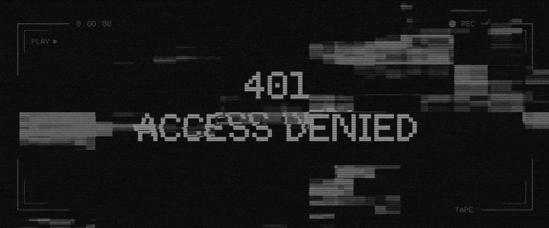
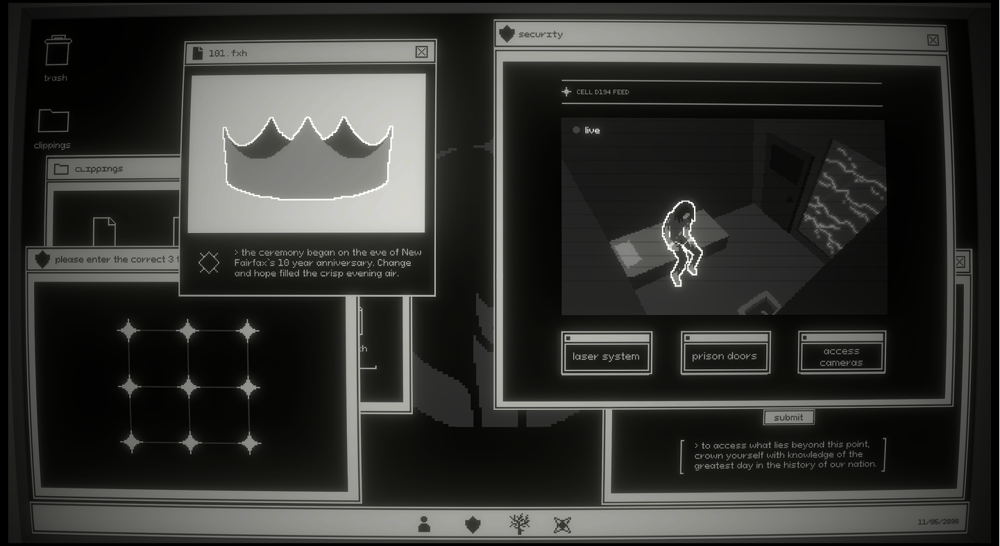
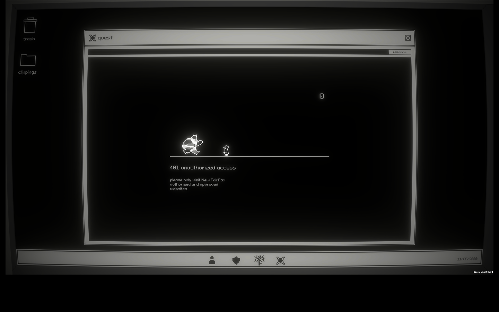

I am passionate about interaction and UX design with a strong interest in how research and science-based approaches can shape digital experiences. I love working with diverse stakeholders to make magic happen. I am also curious about the role of AI in creating innovative solutions and am interested in its ethics and societal impacts. When I'm not embarking on a technology-related adventure, I can be found exploring the outdoors, new music, and good eats.
Concentration in Interaction Design and AI and Data Science for Human Centred Systems
Courses: Interaction and Experience Design, Design for Health Innovation, Design Portfolio for Professional Practice
Photoshop Illustrator InDesign After Effects Figma Premiere Pro Python Java Arduino
UX Design User Research Interaction Design Copy Writing Codesign Storyboarding Content Strategy
IAT 313: Narrative and New Media at SFU
Sandra Cao, Keyaan Vegdani, Jayden Zhang
In this project, my team and I transformed a story into an experience by adapting a script into an interactive digital escape room. Narrative design and interactive storytelling were explored as part of an open-ended project in a narrative and new media unit. Our aim was to design an engaging, visually cohesive, and challenging experience, allowing the complex story to unfold as the player explores.
The player works through a series of challenges presented by the control system of the corrupt government, slowly uncovering pieces of the story the as they explore. This narrative-based game positions the player in the shoes of a rebel attempting to break the rebellion's leader out of prison. One puzzle leads to another, requiring critical thinking, memory, and reasoning. The more the player explores the game environment the more the story is revealed.
Complete with mini games and challenges, this game immerses players in the story world. 401: Access Denied was finalized as a 30-minute long video game which can be found in SFU SIAT's showcase and is playable on itch.io.
Play 401: Access Denied!Email: zlm4@sfu.ca
Linkedin: linkedin.com/in/zoe-mann
Github: github.com/zlwym